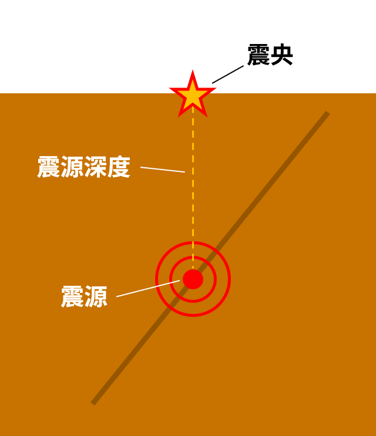

震源？震央？
震源與震央的差異
「震源」是地震發生的起始點、斷層開始錯動的地方；而「震央」則是從震源垂直投影到地表的那一點，也就是地面上最接近震源的位置。
震源深度則是指震源到地表的距離，通常以公里為單位來表示。

震央、震源的關係
沒有 5.5 級的地震
地震規模是用來表示這次地震釋放能量的大小，通常是用沒有單位的小數（如：M 6.5、規模 7.3）表示，後面並不會加上「級」。規模每相差 1，能量約相差 32 倍；相差 2，能量相差 1000 倍。
震度則是表示各地受到地震搖晃的程度，會因為與震央的距離、地質條件等等有所差異。